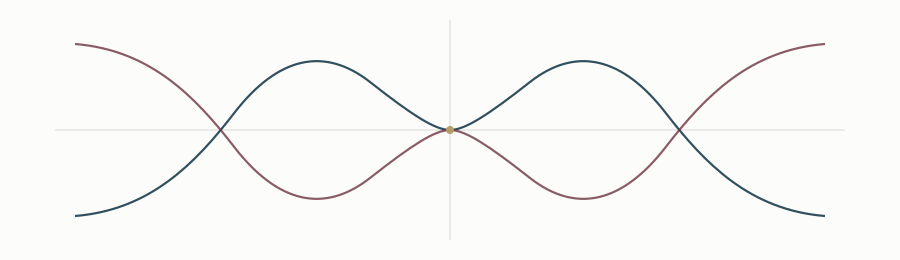

From Diophantine equations to curves
A Diophantine equation can often be viewed as an algebraic curve. This change of viewpoint makes geometric tools available and can turn an arithmetic nonexistence problem into a statement about rational points, divisors, or torsion.

Superelliptic curves
I am interested in families of superelliptic curves and in conditions under which they have no relevant integral or rational solutions. In the families I study, the geometry can be combined with congruence and discriminant information.
Jacobians and torsion

The Jacobian records divisor classes of the curve and provides an arithmetic setting in which torsion can be studied. Reduction at primes of good reduction gives a practical way to constrain torsion, while ramification and valuation arguments provide complementary information.
Nagell–Lutz perspective
A motivating question is how far the philosophy of the Nagell–Lutz theorem and its hyperelliptic analogues can be extended to suitable superelliptic families.